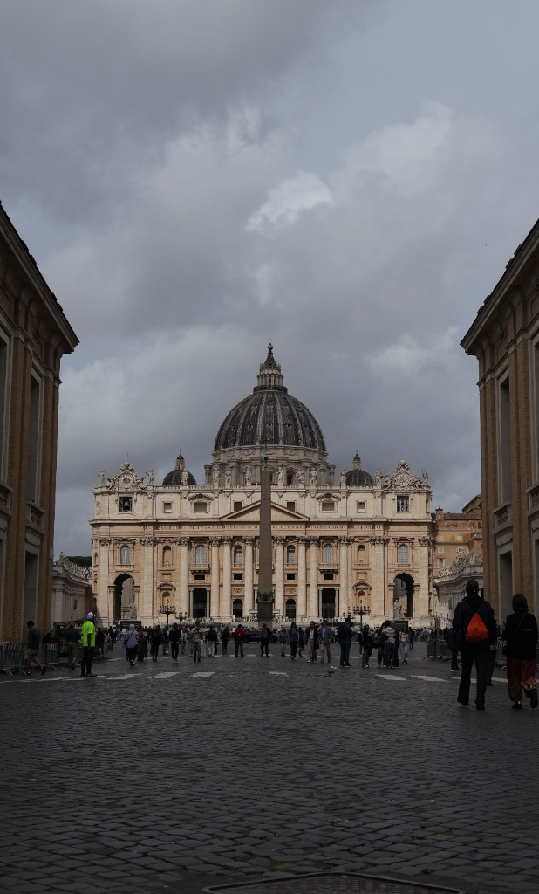
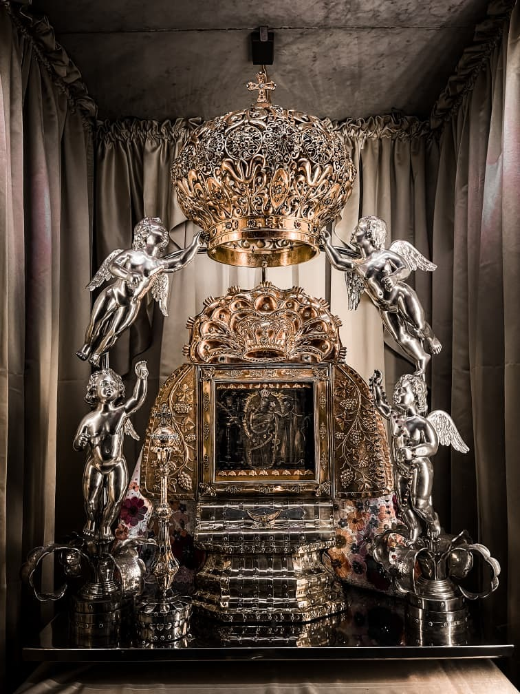
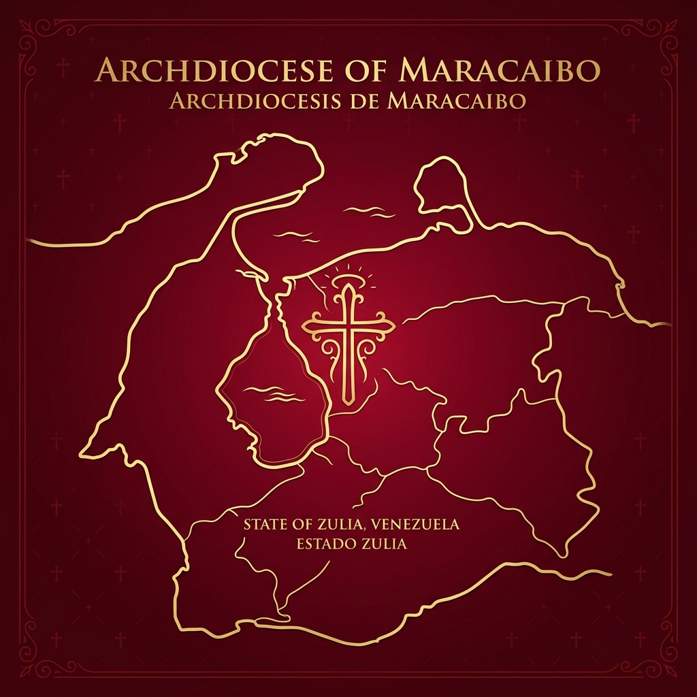

Iglesia Universal
La Iglesia Católica tiene como único centro y cabeza a Jesucristo, el Hijo de Dios. Todo nuestro actuar, organización y misión pastoral nacen del encuentro vivo con Él, buscando hacer presente el Reino de Dios en la sociedad.
Nuestra Arquidiócesis de Maracaibo no es una entidad aislada, sino una porción del Pueblo de Dios integrada plenamente a la Iglesia Católica Universal, unida en comunión de fe, sacramentos y disciplina.
Caminamos en estricta fidelidad y comunión con el Obispo de Roma, el Papa, Sucesor de San Pedro y Vicario de Jesucristo en la tierra. Él es el principio y fundamento perpetuo y visible de la unidad de la Iglesia.
Centralidad en Cristo
Todo nuestro actuar y misión pastoral nacen del encuentro vivo con Jesucristo, buscando hacer presente el Reino de Dios.
Sede Apostólica
Unidos en fe, sacramentos y disciplina con el Sucesor de San Pedro, principio perpetuo de unidad.

Tradición y Devoción
Un legado que se extiende desde la antigua Diócesis del Zulia hasta la elevación a Arquidiócesis Metropolitana.
Crónica de Nuestra Fe
La historia de nuestra Iglesia local se remonta al 28 de julio de 1897, cuando el Papa León XIII erigió la antigua Diócesis del Zulia, separando su territorio de la Diócesis de Mérida.
El 2 de enero de 1953, cambió su nombre a Diócesis de Maracaibo. Gracias al profundo crecimiento en la fe y al dinamismo pastoral de la región occidental, el 30 de abril de 1966 el Papa San Pablo VI elevó la sede al rango de Arquidiócesis Metropolitana, siendo Monseñor Domingo Roa Pérez su primer Arzobispo.
Hoy en día, la Arquidiócesis congrega a cientos de miles de fieles y abarca una rica estructura parroquial, liderada por nuestro Arzobispo, impulsando la nueva evangelización y labor social en el estado Zulia.

La Chinita
Nuestra Señora del Rosario de Chiquinquirá, corazón espiritual y Patrona indiscutible del Zulia desde 1709.
Conoce el MilagroNuestro Territorio
La Arquidiócesis abarca un vasto y diverso territorio que incluye los municipios Maracaibo, San Francisco, Jesús Enrique Lossada, Mara, Almirante Padilla y La Cañada de Urdaneta.
Nuestro pueblo fiel se caracteriza por una profunda devoción mariana, alegría inconfundible y un fuerte apego a sus tradiciones, incluyendo las etnias indígenas Wayúu y Añú.

Ntra. Sra. del Rosario de Chiquinquirá
La venerada imagen de Nuestra Señora del Rosario de Chiquinquirá, cariñosamente llamada "La Chinita", es el corazón espiritual del Zulia y Patrona indiscutible de nuestra Arquidiócesis.
Cuenta la historia que en 1709, en las orillas del Lago de Maracaibo, una humilde mujer encontró una pequeña tabla que llevó a su casa. Días después, el 18 de noviembre, escuchó unos golpes que provenían del cuarto donde había colgado la tabla. Al asomarse, la vivienda se llenó de un gran resplandor: en la madera se había dibujado nítidamente la imagen de la Virgen de Chiquinquirá.
Desde aquel milagro de la renovación, hace más de tres siglos, la Basílica Santuario alberga la Reliquia, siendo centro de peregrinación continua y manifestación del profundo fervor mariano de todo el pueblo zuliano.
Estructura Eclesial
Gobierno, vicarias y presbiterio al servicio de la grey.
Vicarios Episcopales
Vicario General
Pbro. Jesús Enrique Hernández
Moderador de la Curia
Vic. Episcopal Maracaibo-Oeste
Pbro. Jesús Sandoval
Territorio Pastoral
Añadir otros vicarios territoriales y funcionales según aplique
Presbiterio Arquidiocesano
Listado oficial de sacerdotes incardinados al servicio de la Arquidiócesis de Maracaibo.
Adelmo Irene
Presbítero
Alejandro Rincón Quiroz
Presbítero
Alfonso Rodríguez
Presbítero
Andry Sánchez
Presbítero
Andrés de Jesús Afanador Rodríguez
Presbítero
Carlos José Reyes
Presbítero
Carlos Quiva
Presbítero
Daigel Medina
Presbítero
Dainer Prieto
Presbítero
Danilo González
Presbítero
Danilo Humberto Calderón Matheus
Presbítero
Dilmer Báez
Presbítero
Dionni José Ríos Ríos
Presbítero
Edgar J. Doria M
Presbítero
Eduardo José Daboin Bermúdez
Presbítero
Eleuterio Segundo Cuevas Pereira
Presbítero
Ender Alexander Castillo Montoya
Presbítero
Engelbert Alfredo Jackson Carrasco
Presbítero
Enrique Rojas Peña
Presbítero
Evelio Pérez
Presbítero
Fabricio Medina
Presbítero
Francisco Antonio Niño Correa
Presbítero
Francisco José Núñez Larez
Diácono
Francisco Ortiz Bran
Presbítero
Germán Palmar
Presbítero
Hebert de Jesús Rivera Cañizález
Presbítero
Henry Tapia
Presbítero
Horacio
Diácono
Héctor de los Reyes Bermúdez C
Presbítero
Jesús Alfredo Serrano
Diácono
Jesús Colina
Presbítero
Jesús Sandoval
Presbítero
Jesús Vásquez
Presbítero
Jorge A. Dos Pasos
Presbítero
Jorge David Sánchez Urdaneta
Presbítero
Jorge Enrique Rodríguez González
Presbítero
José Andrés Bravo Henríquez
Presbítero
José Antonio Díaz
Presbítero
José Domingo Alvarado
Presbítero
José Enrique Varela
Presbítero
José G. Sánchez
Presbítero
José Gregorio Andrade Vecino
Presbítero
José Gregorio Montenegro Fereira
Presbítero
José Gregorio Pineda
Presbítero
José Miguel Hernández
Presbítero
José Pineda
Presbítero
José Vivas Vivas
Presbítero
José del Carmen Chirinos
Presbítero
Juan Carlos Fernández
Presbítero
Juan Esteban Padilla Ponce
Presbítero
Juan José Navarro Robertis
Presbítero
Juan Pablo Hernández
Presbítero
Laudi Zambrano
Presbítero
Lenín José Naranjo Flores
Presbítero
Leonardo López
Presbítero
Leonardo Martínez
Presbítero
Max Gregorio Guerere Rodríguez
Presbítero
Miguel Antonio Ospino
Presbítero
Nedward Jorge Andrade
Presbítero
Néstor Luis Pérez
Presbítero
Néstor Primera
Presbítero
Oswaldo Matheus González
Presbítero
Ovidio Eduardo Duarte Torres
Presbítero
Pedro Castellano
Presbítero
Pedro Colmenares
Presbítero
Pedro Enrique Paredes Ramírez
Presbítero
Poncs Capell Capell
Presbítero
Rafael López
Presbítero
Rafael Morales
Presbítero
Rafael Ángel Villalobos Carmona
Presbítero
Randy Romero
Diácono
Raúl Moreno
Presbítero
Raúl R. Montoya Medero
Presbítero
Renzo O. Gotera
Presbítero
Ricardo Riaño
Presbítero
Richard Garrillo
Presbítero
Robert Alberto Álvarez Pérez
Presbítero
Roberto Segundo Morales Carruyo
Presbítero
Santos Xavier Silva Blanco
Presbítero
Silverio Antonio Osorio Mora
Presbítero
Valentín Segundo Rodríguez López
Presbítero
William Chiquinquirá Ortega Colmenares
Presbítero
Wilmer Olano
Presbítero
Yonder Javier Urdaneta Hiza
Presbítero
Yonys Mendoza
Presbítero
No se encontraron sacerdotes con ese nombre.
Una Iglesia en Salida al Encuentro
Caminamos juntos como una Iglesia sinodal, buscando llegar a todas las periferias y llevando la buena noticia del Evangelio a cada hogar zuliano.